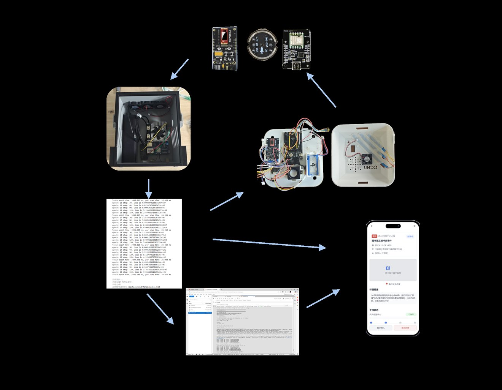
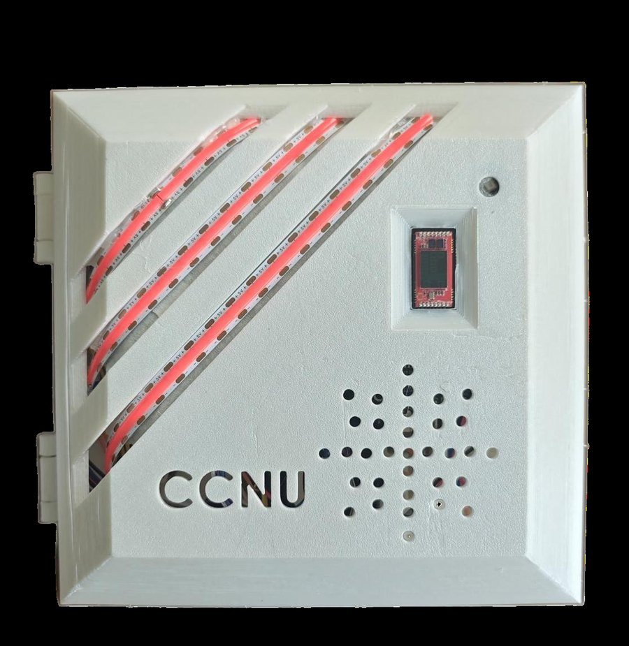
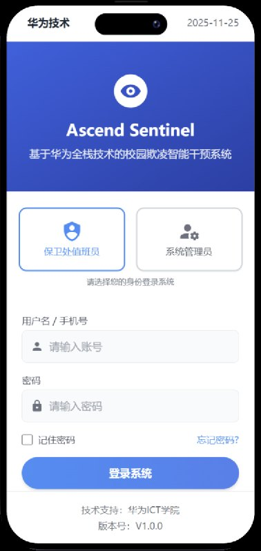
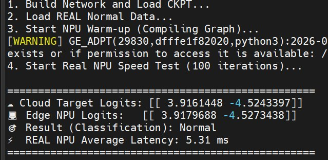

2023.09 - 2027.06 · GPA 3.6 / 4.0 · Major rank 6
LLM retrieval, OpenHarmony/LiteOS development, NearLink SLE, robot control.
Building systems that connect models, sensors, communication links, and deployment.
Research
Selected Research Experience
LLM-Based Zero-Shot Video Moment Retrieval with Selective Acoustic Anchoring
Built a zero-shot video moment retrieval workflow using LLM-assisted semantic understanding, transcript/audio evidence, and selective acoustic anchoring to improve temporal localization for queries whose visual content is semantically implicit.
- Explored text and audio alignment signals for temporal moment retrieval.
- Used acoustic cues to supplement visual-semantic retrieval under weak supervision.
- Connected research work with competition experience in RoboCup-related projects.
Projects
Engineering Projects

Ascend Sentinel: Multimodal Campus Safety Warning System
Developed the audio modality of the perception terminal for a campus violence early-warning system based on audio, millimeter-wave radar, NearLink SLE, edge inference, and Huawei Cloud.
- Customized D02 NearLink board SDK development with OpenHarmony and LiteOS.
- Implemented and tested microphone acquisition, SLE transmission, and UART communication.
- Built two-board SLE data transfer and measured packet loss for link reliability.

Edge Perception Terminal Development
Worked close to the board-level development flow, including SDK compilation, firmware flashing, peripheral debugging, and sensor data transmission.

End-to-End Warning Workflow
The complete solution connects perception terminals, edge inference, IoTDA routing, and a security-side application for alert handling and feedback.

Humanoid Dance Robot Voice Interaction and Motion Control
Participated in a five-member humanoid robot team and worked on motion tuning, sensor debugging, Raspberry Pi / Orange Pi control-side development, and servo controller protocol research.
- Implemented voice-triggered actions such as raising an arm and starting dance sequences.
- Studied the servo controller protocol and controlled servos through code-level instructions.
- Supported the team in winning the national final runner-up award in dance robot performance.
Awards
Selected Honors
- Chinese Robotics Competition and RoboCup China, Dance Robot Performance, National Final Runner-up
- Huawei ICT Competition China Innovation Track, National Final First Prize
- University-level Innovation and Entrepreneurship Training Program, Outstanding Project
- Bo Ya Technology Scholarship
Contact